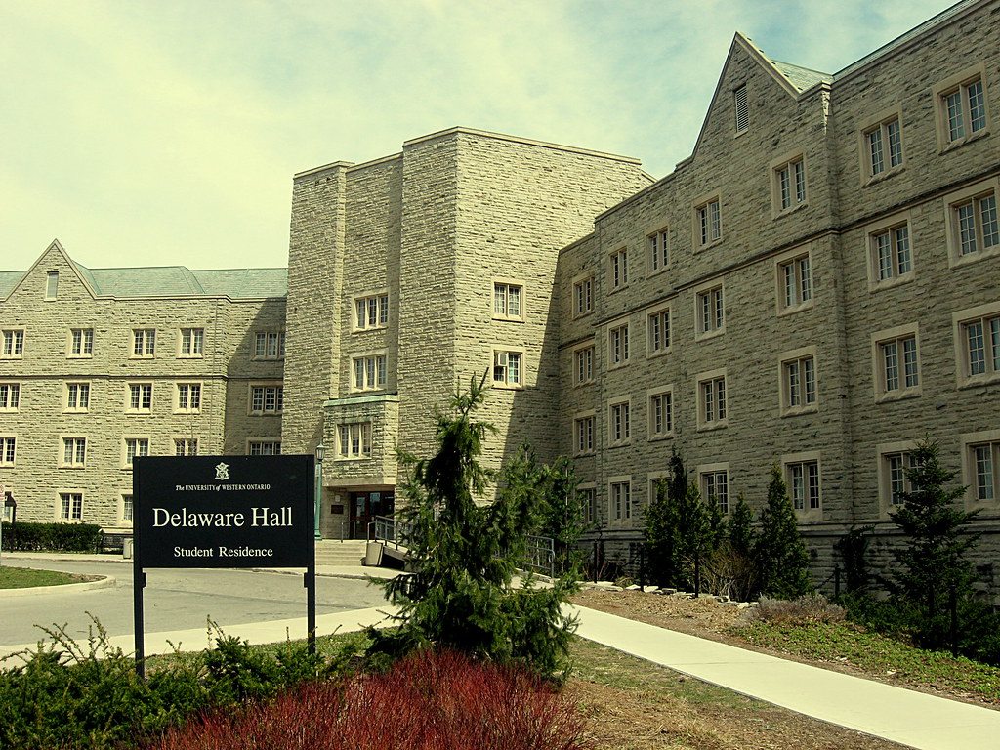
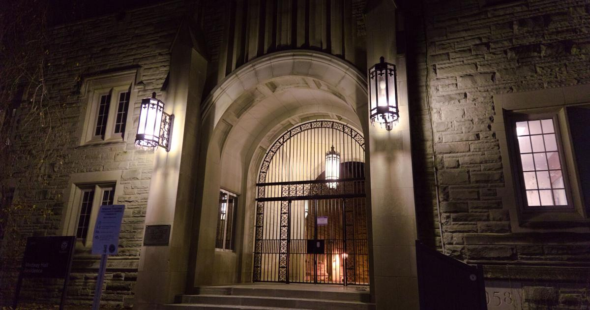
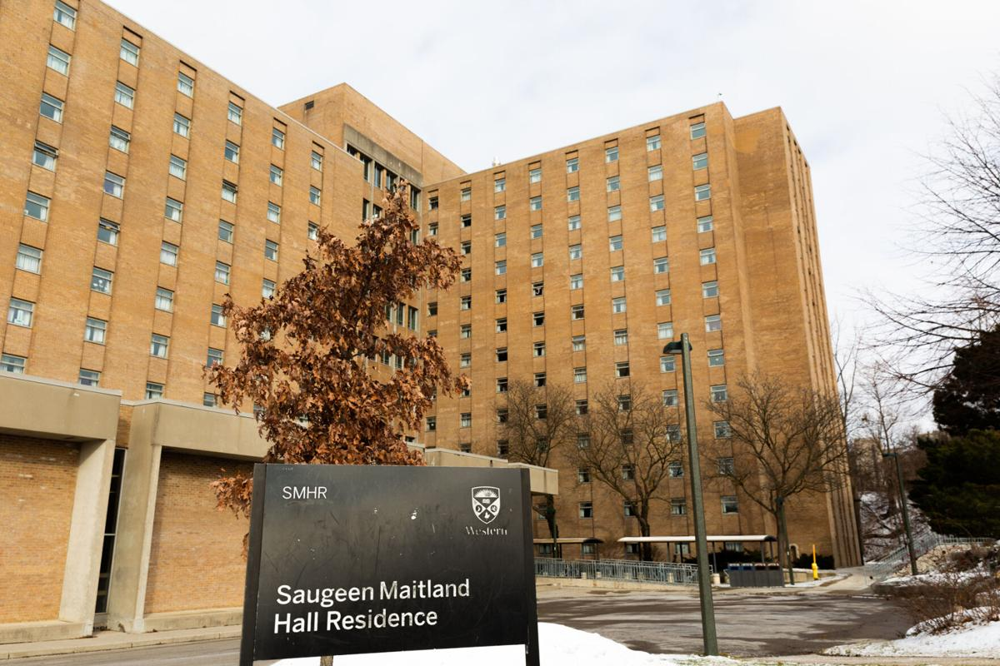
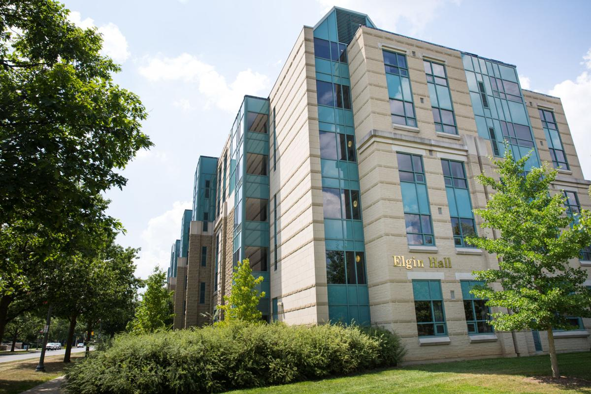
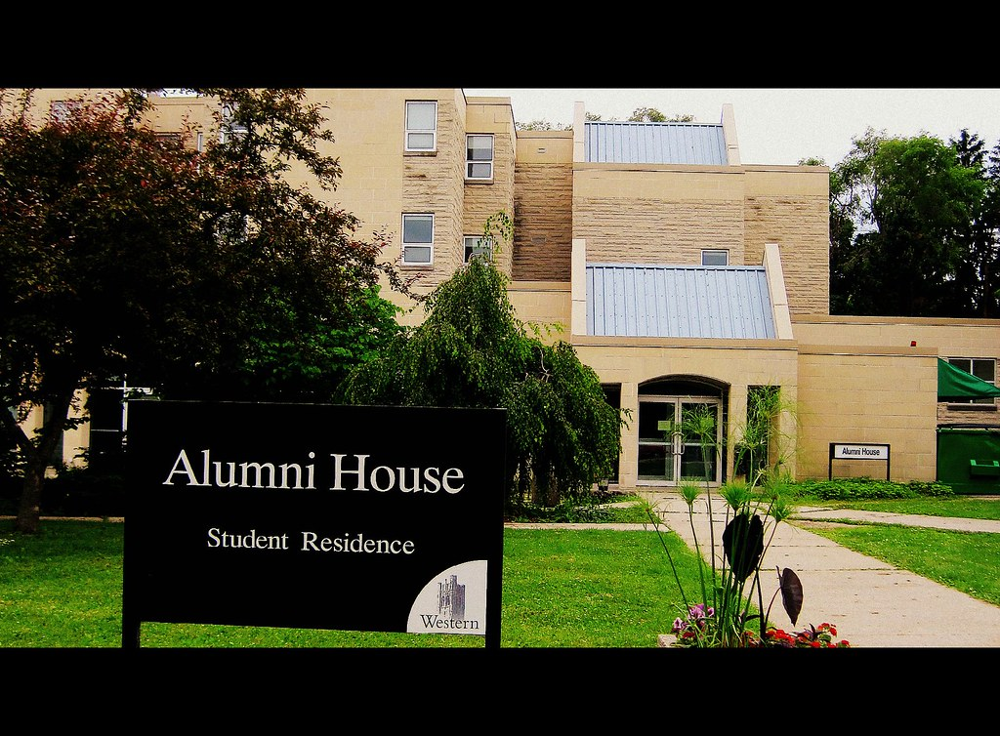
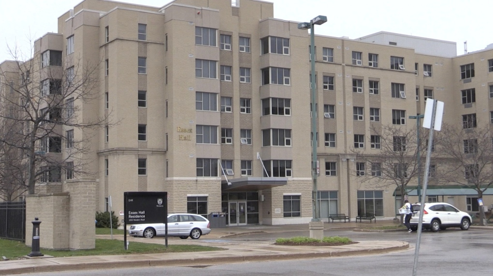
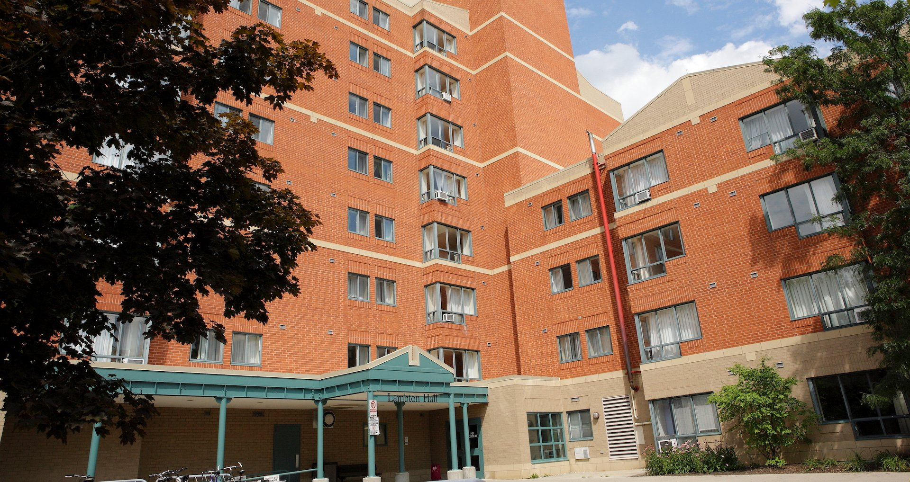
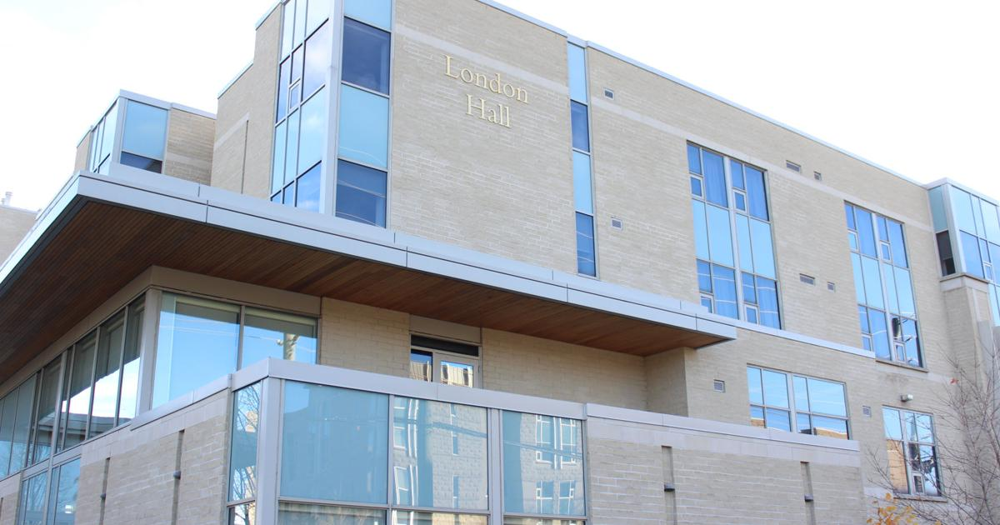
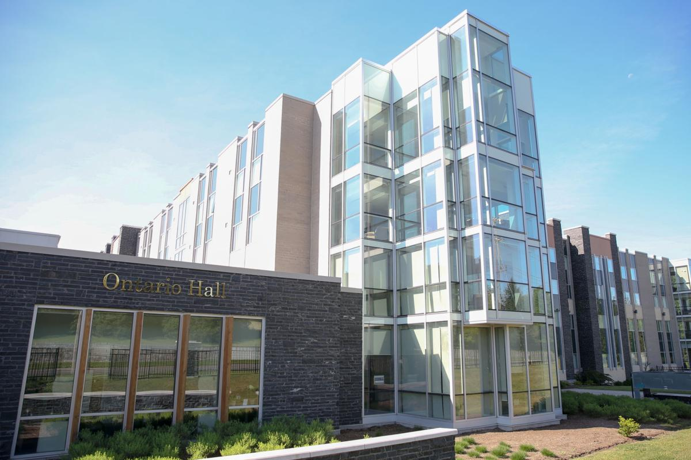
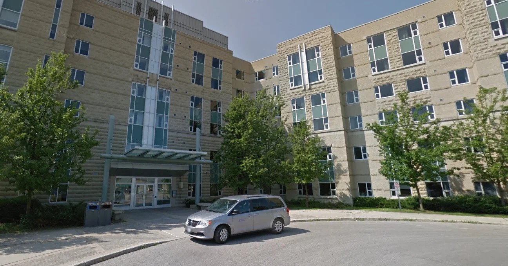

Residences
Residence life is more than just a place to rest your head, it is a life changing experience in which you will make life long friends!
Fun Fact: originally all residences were named after local rivers. If you are driving around Southwestern Ontario, you might see rivers with the same name as Western residences.
There are three main styles of residences at Western. Below are residences styles and the building within each category:
- Traditional Style - one or two students in a small room and a shared washroom for the floor.
- Suite Style - one student per bedroom with a shared kitchen between 4 students.
- Hybrid Style - two students per bedroom but still a bit more private than the traditional style as the bathroom is just shared between 2 students.
Traditional Style
Delaware - Opened in 1965, Delaware literally marks an X on the campus! '
Medway/Sydenham - Medway Hall was constructed in 1958 and then Sydenham was added in 1961. Although co-ed now, both were originally all male residences.
Saugeen-Maitland - Opened in 1969, Saugeen was the first co-ed residence on campus.
|  |  |  |
Delaware |
Medway |
Saugeen |
|  |  |  |
Elgin |
Alumni |
Essex |
|  |  |
Lambton |
London |
Suite Style
Alumni House - Built in 1986, students in this residence dine at either Elgin or Med/Syd.
Elgin Hall - One of the newer residences, Elgin opened its doors in 1999.
Essex Hall - Established in 1997, Essex has a special floor just for Engineering students.
Lambton Hall - This apartment style building is mainly for upper year students and has been a part of the university since 1992.
London Hall - This residence was opened in 2006. London students eat at the nearby dining hall in Essex.
Hybrid Style
Ontario Hall - Ontario Hall is the newest and one of the largest residences at Western. OHall accepted its first students in 2006.
Perth Hall - Perth was built in 2003 and has an outdoor volleyball court for warm weather and a comfort lounge with a fireplace for colder days.
|  |  |
Ontario |
Perth |